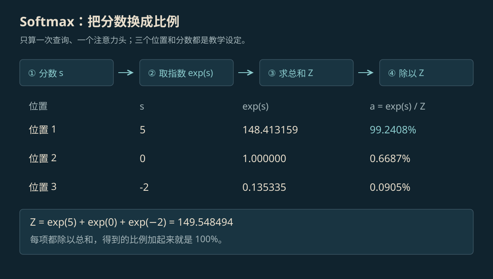
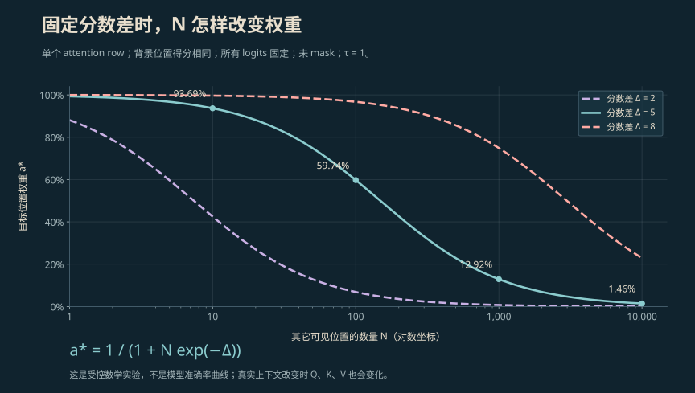
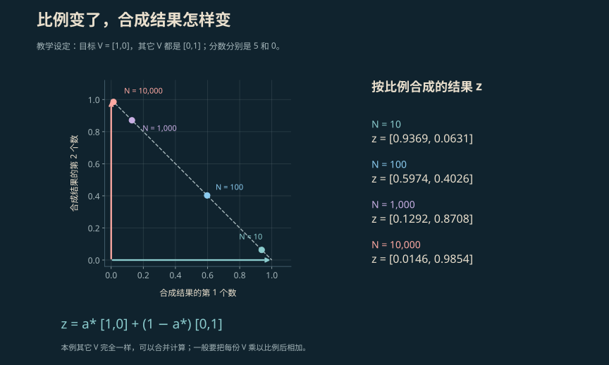
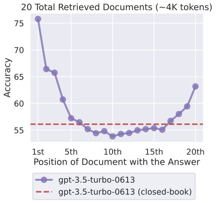

SOFTMAX · SCALED DOT-PRODUCT ATTENTION
Softmax 与 Attention 原理：公式、计算与注意力稀释
Attention 决定从前文各处取多少信息，Softmax 负责把分数换成比例。从 Q、K、V 的含义开始，逐步算出这些比例，再说明内容变多时，为什么一条信息分到的比例可能变小。
本页目录
Attention 与 Softmax 是什么#
Attention（注意力）会计算：当前这一步，应该从前面的哪些位置多取一些信息。它先给各个位置打分，再把分数换成比例，最后按比例把信息合起来。Softmax 就是中间那一步：把一组分数换成总和为 100% 的比例。这里的比例叫“权重”。
公式里的 Q、K、V 都是一排排数字。Q 用来发起查询，K 用来和查询做匹配，V 保存要取出的信息。完整计算写成下面这样：[1]
右侧按三步计算：QKᵀ / √dₖ 算分数；softmax 把分数换成比例；最后乘 V，按这些比例把信息合起来。
下面只看模型生成回答时，一次查询、一个注意力头的计算。注意力头是模型里并排工作的几组注意力计算。每一组、每一次查询都有自己的 100%。这里先不做 attention dropout，也就是不随机丢弃部分权重，并假设至少有一个位置可供读取。
Q、K、V 分别做什么#
| 符号 | 含义 | 本例怎样排 |
|---|---|---|
| q / Q | 当前这一步用来找信息的数字 / 多次查询排成的表 | q：一排 2 个数 |
| K | 每个能读取的位置用来匹配的数字 | 3 排，每排 2 个数 |
| V | 每个位置实际要提供的信息，按比例相加 | 3 排，每排 2 个数 |
| dₖ | Q 和 K 每排有几个数字 | 2 |
| M | 决定哪些位置能读；允许时加 0，屏蔽时加 −∞（负无穷），让该项权重为 0 | 本例不屏蔽 |
| a / z | 各位置分到的比例 / 按比例合起来的数字 | a：3 个比例；z：2 个数 |
模型会先把文字切成小块，每块叫一个 token。一个词可能占一块，也可能分成几块，所以 token 数不等于字数。这里每个 K、V 对应一个能读取的位置；一句完整规则通常会占多个位置。
向量就是一排数字，矩阵就是把多排数字放成一张表。在 self-attention（自注意力）中，模型把同一份文本的内部数字表示，分别经过三套学来的计算，得到 Q、K、V。Q 和 K 负责算匹配分数，V 负责提供要合起来的信息。实际模型还会利用文字的位置；下面的手算例子先省略这部分。
点积 q · kⱼ 的算法是：两排数字按位置相乘，再把乘积加起来。j 表示第几个位置；∑ 表示把各项相加。Kᵀ 表示把 K 的行和列互换，方便一次算出查询与各个键的匹配分数。dₖ 是每排数字的个数，√dₖ 是它的平方根。
原论文用一组简化假设说明：数字越多，点积分数的波动可能越大。除以 √dₖ 可以控制这个大小，避免 Softmax 的比例过早集中在少数位置。[1]
缩放的数学依据
论文假设各个数字相互独立、均值为 0、方差为 1。此时 dₖ 项乘积之和的方差为 dₖ，除以 √dₖ 后方差变为 1。方差描述数字波动的大小。这是解释缩放理由的假设，不表示训练后的每一层都符合这组条件。
 放大查看 ↗
放大查看 ↗Softmax 公式与四步计算#
把第 j 个位置的分数写成 sⱼ，所有能读取的位置合在一起记作 S。公式中的 e 约等于 2.718，e⁵ 是 e 连乘 5 次，e⁰ = 1，e⁻² = 1/e²。Softmax 的计算是：每项先取指数，再除以所有项的指数总和。
取指数后，有限分数都会变成正数，所以负分也能分到一点比例。再统一除以总和，所有比例加起来就等于 1，也就是 100%。这一步叫“归一化”。是否允许读取某个位置，要另外用 mask（掩码）决定。
沿用上面的三组数字，得到分数 [5, 0, −2]。为了方便理解，把这三个位置分别标成“目标信息、寒暄、空行”。这些标签和分数都是教学设定，不是从真实模型读取的结果。

放大查看 ↗| 教学标签 | 分数 sⱼ | 指数 exp(sⱼ) | 权重 |
|---|---|---|---|
| 目标信息 | 5 | 148.413159 | 99.2408% |
| 寒暄 | 0 | 1 | 0.6687% |
| 空行 | −2 | 0.135335 | 0.0905% |
分母，也就是指数总和，约为 149.548494。每项除以它，就得到表里的比例。显示的小数经过四舍五入，相加时可能有一点误差。分数相差 5 时，两项的权重比为 e⁵ ≈ 148.4：
Softmax 看的是分数之间的差距。把 [5, 0, −2] 每项都加 100，差距没变，得到的比例也不变。后面的代码会利用这一点，避免计算的数太大。
怎样按比例把信息合起来#
给三个位置各放一排只有两个数的 V：目标位置是 [1, 0]，另外两个位置都是 [0, 1]。把每排数乘以对应比例，再按列相加：
这里得到的 z 也是一排数字：[0.992408, 0.007592]，很接近目标位置的 [1, 0]。结果同时受比例和 V 中的数字影响。比如，三个位置的 V 如果全是 [1, 0]，无论比例怎样分，合起来仍是 [1, 0]；V 里若有正负相反的数，还可能相互抵消。
模型后面还会合并多组注意力计算，并继续处理结果。它也能通过残差连接把前面的信息直接往后传。因此，某个头给一句话的比例低，并不能直接算出模型忘记或违反这句话的概率。[5]
注意力稀释：分母怎样随 N 增长#
为了只看数量的影响，换一组更简单的输入：目标位置一直得 5 分，其它位置全得 0 分。其它位置有 N 个，算上目标位置一共是 N + 1 个。所有位置都允许读取。这和前面的 [5, 0, −2] 是两组不同输入。
用 Δ 表示目标比其它位置高几分：Δ = s∗ − s₀。星号只用来标记我们关注的目标位置。把这些条件代入 Softmax，可以把目标的比例整理成：
目标分数不变，所以分子不变。每多一个 0 分位置，分母就多一份 e⁰ = 1。分母变大，目标的占比就变小。哪怕它仍然是单个位置里分数最高的，也会发生这种下降；这里把它叫作注意力稀释。

放大查看 ↗| 其它 key 数 N | 目标权重 a∗ | 其余项总权重 |
|---|---|---|
| 10 | 93.6874% | 6.3126% |
| 100 | 59.7445% | 40.2555% |
| 500 | 22.8887% | 77.1113% |
| 1,000 | 12.9233% | 87.0767% |
| 10,000 | 1.4624% | 98.5376% |
只要原来的分数保持不变，新增位置又没有被 mask 屏蔽，它就会给分母增加一个正数，原目标的比例会下降。真实模型里，加入文字也会改变位置和内部数字，分数未必不变。因此，这张表只能说明固定分数时的计算结果。
交互计算：N 与分数差
这里假设其它位置的分数都一样。拖动 N 改数量，拖动 Δ 改目标高出多少分。
- 目标分到的比例
- 1.4624%
- 其它位置合计
- 98.5376%
- 要占 90% 需高出几分
- 11.4076
这里直接按公式算比例，没有调用模型，也没有测任务成功率。
想保住同样的比例，需要高出多少分#
目标要保持较大的比例，需要和其它位置拉开足够的分数差。还是假设其它 N 项得分相同，用 p 表示想保住的比例。例如 p = 0.9，就是希望目标至少占 90%。当 N ≥ 1、0 < p < 1 时：
ln 叫自然对数，它和 e 的指数运算相反：如果 eˣ = N，那么 x = ln N。推导时，先把 1 / (1 + N·e^(−Δ)) ≥ p 移项，得到 N·e^(−Δ) ≤ (1−p)/p，再取自然对数，就能解出所需分数差。
例如要保住 90%，N = 100 时，Δ 至少约为 6.8024；N = 10,000 时，至少约为 11.4076。其它位置增加一百倍，所需差距就要再增加 ln 100 ≈ 4.6052。
因此，目标分数保持最高还不够，还要看其它位置有多少、总共分走多少。如果目标与其它位置的分数差也变大，目标就可能保持原来的占比。
计算注意力时，还可以把分数统一除以正数 T，写作 softmax(s/T)，这时有效差距变成 Δ/T。T 越小，比例通常越集中；如果最高分给错了，这种集中也会加强错误。这里的 T 作用于注意力分数。文本生成接口里的采样温度作用于最后“选哪个词”的分数，两者控制的是不同步骤。标准公式里的 1/√dₖ 则用于控制点积分数的大小。
比例变了，合成结果怎样变#
继续把目标 V 设为 [1, 0]，其它 V 全设为 [0, 1]。这样合出来的结果就是 [目标占比，其它项总占比]。N = 10 时约为 [0.9369, 0.0631]；N = 10,000 时约为 [0.0146, 0.9854]。图上的横、纵坐标，就是这两个数。

放大查看 ↗这是特意把其它 V 全设成一样的结果。如果其它 V 的数字相互抵消，或者后面的计算保留了目标信息，最终影响会不同。1.4624% 只表示本例的一项权重，不能当作模型删数据或违背规则的概率。“表征坍塌”还涉及模型内部不同信息变得难以区分，需要另外检查；单个权重下降不足以得出这个结论。
用 Python 重算，并处理数太大和屏蔽位置#
exp(1000) 表示 e 的 1000 次方，这个数可能大到超出计算机能表示的范围。可以先把每个分数都减去这一行的最大分数，再算指数。所有项减去同一个数，差距不变，Softmax 的结果也就不变：
在数学公式里，有限分数的指数都大于 0。计算机保留的小数位有限，极小的数可能会变成 0，这叫“下溢”。mask 则是主动屏蔽某些位置，让它们的权重为 0。例如，模型生成文字时，不能读取还没有出现的后文。
下面代码使用 Python 3 标准库。allowed 这个布尔列表就是 mask：True 表示能读，False 表示屏蔽。输入分数应为有限数。如果全部位置都被屏蔽，代码会报错，因为没有信息可供合成。实际框架对 mask 形状和传法还有自己的规定。[4]
from math import exp, sqrt, isclose
def softmax(scores, allowed=None):
allowed = [True] * len(scores) if allowed is None else allowed
if len(scores) != len(allowed) or not any(allowed):
raise ValueError("need at least one visible key")
maximum = max(s for s, ok in zip(scores, allowed) if ok)
numerators = [exp(s - maximum) if ok else 0.0
for s, ok in zip(scores, allowed)]
total = sum(numerators)
return [x / total for x in numerators]
q = [sqrt(2), 0.0]
keys = [[5.0, 0.0], [0.0, 1.0], [-2.0, 0.0]]
values = [[1.0, 0.0], [0.0, 1.0], [0.0, 1.0]]
scores = [sum(x * y for x, y in zip(q, k)) / sqrt(len(q))
for k in keys]
weights = softmax(scores)
z = [sum(a * v[d] for a, v in zip(weights, values))
for d in range(2)]
print("scores:", [round(x, 6) for x in scores])
print("weights:", [round(x, 6) for x in weights])
print("output:", [round(x, 6) for x in z])
assert isclose(sum(weights), 1.0)
assert softmax([1000.0, 1000.0]) == [0.5, 0.5]
assert softmax([5.0, 0.0, -2.0], [True, True, False])[2] == 0.0
try:
softmax([5.0], [False])
except ValueError:
pass
else:
raise AssertionError("all-masked row must be handled")运行后会打印分数 [5.0, 0.0, −2.0]、权重 [0.992408, 0.006687, 0.000905]，以及合成结果 [0.992408, 0.007592]。后面的 assert 用来检查：比例之和为 1，大分数能正常计算，屏蔽项为 0，全部屏蔽时会报错。
from math import exp, log, isclose
def target_weight(n, gap):
return 1 / (1 + n * exp(-gap))
for n in [10, 100, 500, 1000, 10000]:
print(f"N={n:5d}: {100 * target_weight(n, 5):.4f}%")
p = 0.9
for n in [100, 10000]:
required_gap = log(n) + log(p / (1 - p))
assert isclose(target_weight(n, required_gap), p)
print(f"N={n:5d}, 90% requires gap={required_gap:.4f}")第二段代码重算 N 的表格，并把“保住 90% 所需的分数差”代回公式，检查是否确实得到 90%。这些结果验证的是手算和程序。要判断真实模型是否更好，还要实际测试它的回答和动作。
内容的位置为什么也会影响结果#
刚才的公式只改变数量，没有区分信息在开头、中间还是结尾。因此，“中间的信息更容易被漏掉”需要另外做实验。
| 现象 | 观察的量 | 能说明什么 |
|---|---|---|
| 本页固定分数稀释 | 一次计算里，目标信息分到的比例 | 分数不变时，其它位置变多，目标占比怎样下降 |
| Lost in the Middle | 把相关资料放在不同位置，模型答对多少 | 研究中的若干模型不能稳定利用中间位置的信息 |
| Attention Sink | 开头位置分到的比例，以及保留这些位置的数字有何效果 | 某些开头位置即使内容不重要，也会分到较多比例 |
Lost in the Middle 的研究把同一份相关资料移到不同位置，再看模型答对多少。研究中，若干模型在资料位于开头或结尾时表现较好，放到中间时较差。图里画的是答题准确率，适用范围是论文测试的那些模型和任务。[2]

放大查看 ↗StreamingLLM 观察到另一件事：一些开头位置即使没有重要意思，也可能分到较多注意力。作者发现，在其测试设置下，让模型继续保留这些位置的 K、V 数字，有助于它处理后面不断进来的内容。这些承接较多权重的位置叫 attention sink，常译作“注意力水槽”。它和“资料放中间时答题变差”是两个不同的观察，不能直接合成同一个原因。[3]
怎样检查这些变化是否真的有用#
公式说明：如果其它内容增加，而目标与其它位置的分数差没有变大，目标分到的比例可能下降。可以据此做实验：去掉无关材料，让检索只带回当前问题需要的资料。拆给多个 Agent 也能减少每个 Agent 看到的内容，但还要检查分工和合并是否出错。前面算出的 22.8887% 是权重，不是任务成功率。
可以用同一组题比较四种输入：只给必要资料、加入无关材料、把相关资料移到中间、筛选资料后再输入。每次用相同模型、工具和检查条件，记录答对多少、引用是否正确、动作是否符合要求、用了多少钱和多少时间。数量与位置分开改变，才容易知道是哪项起了作用。具体检查方法见 Agent 评测，资料选择见 上下文工程。
如果规则是“不要删除用户数据”，负责执行工具的程序还要检查删除权限和参数。提示词怎么摆放可以测试，工具是否允许删除则由程序控制。这样，执行限制有明确的检查位置。
参考资料
论文、官方文档与案例依据。
- [1]Vaswani et al. · Attention Is All You Need ↗
NeurIPS 2017。缩放点积注意力、维度缩放、多头与残差架构；数值例子为本站教学设定。
- [2]Liu et al. · Lost in the Middle: How Language Models Use Long Contexts ↗
TACL 2024，12:157–173。多文档问答与键值检索中的位置实验，不能视为所有模型的固定规律。
- [3]Xiao et al. · Efficient Streaming Language Models with Attention Sinks ↗
2023 年预印本，ICLR 2024。初始 token 的 attention sink 与流式 KV 缓存；不同于长上下文任务准确率曲线。
- [4]PyTorch · scaled_dot_product_attention ↗
官方缩放点积注意力接口与等价计算示意；本文 Python 为独立教学实现。
- [5]Jain & Wallace · Attention is not Explanation ↗
NAACL 2019。注意力权重与模型解释之间的限制；不把单头权重直接当作行为概率。